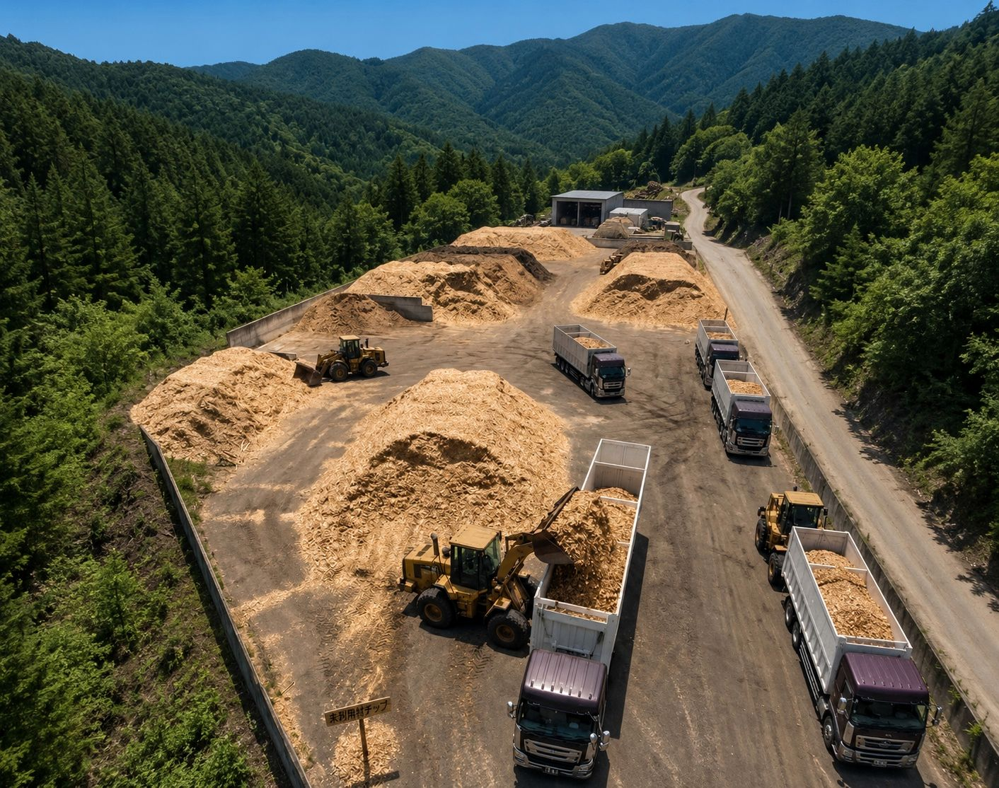
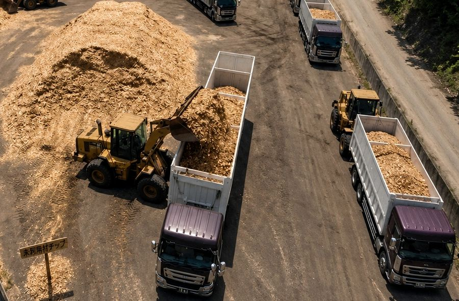

01
自社製造チップを供給
自社プラントで製造・品質確認した木質チップを、バイオマス発電所向け燃料として供給します。
 株式会社ClearthForest Resource Company
株式会社ClearthForest Resource Company

SERVICE
株式会社Clearthでは、自社製造した木質チップをバイオマス発電所向け燃料として安定供給しています。
バイオマス燃料供給は、自社プラントで製造した木質チップを、発電所やお客様へ届ける最終工程です。
株式会社Clearthでは、木材廃棄物処分、一次破砕、木質チップ製造を経て製品化した木質チップを、品質管理・在庫管理・出荷体制まで一貫して管理しています。
大型車両への積込みや出荷にも対応し、必要量や供給頻度、品質条件を確認したうえで、バイオマス発電所向け燃料として安定供給します。
広島県を中心に、発電事業者や法人企業からの継続供給のご相談にも柔軟に対応します。
WHO IT HELPS
発電事業者、木材関連企業、法人企業、自治体・公共施設
WHY CLEARTH
現場対応から再資源化、供給までを一体で考え、安心して相談できる体制を整えています。
自社プラントで製造・品質確認した木質チップを、バイオマス発電所向け燃料として供給します。
木質チップの在庫管理から大型車両への積込み、出荷まで一貫して管理しています。
必要量や供給頻度、品質条件を確認し、発電事業者や法人企業の継続的な相談に対応します。
SUPPLY
株式会社Clearthでは、自社製造した木質チップを品質確認・在庫管理・大型車両への積込み・出荷まで一貫して管理しています。
発電所向け燃料としての用途や必要量、供給頻度を確認し、無理のない供給条件をご提案します。
大量供給や継続供給のご相談にも柔軟に対応しておりますので、法人企業・発電事業者の方もお気軽にお問い合わせください。

CONSULTATION
必要量や供給頻度がまだ決まっていない場合でも、用途や受入条件を確認しながら供給方法をご提案します。
木質チップはバイオマス発電所向け燃料としての供給を見据え、品質確認・保管・在庫管理・出荷まで一貫して管理しています。
広島県内を中心に、発電事業者・法人企業・木材関連事業者からのバイオマス燃料供給のご相談に対応しています。
CONTACT
自社製造した木質チップの供給条件、必要量、出荷方法、継続供給について、お客様の用途に合わせてご提案いたします。発電事業者・法人企業の方もお気軽にご相談ください。